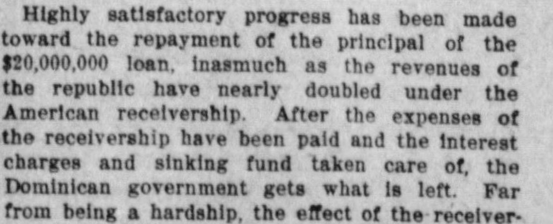
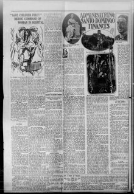

Administering Santo Domingo FinancesLa administración de las finanzas de Santo Domingo
The Columbus Commercial. Columbus, Miss., October 26, 1913. Page 4. Published by J.T. Senter. A weekly newspaper, 1893–1922.The Columbus Commercial. Columbus, Miss., 26 de octubre de 1913. Página 4. Publicado por J.T. Senter. Periódico semanal, 1893–1922. View the originalVer el original


See the full pageVer la página completaThis article explains that the United States government is the custodian of the Dominican revenues under a treaty, standing sponsor for the conservation of the public funds and the settlement of the republic's debts, and that President Wilson appointed Mr. Vick to administer the receivership, his salary of $6,500 a year being paid by the Dominican government. It says the removal of the customs revenues to neutral hands gave Santo Domingo its first long period of freedom from revolution, from 1905 to 1912, and recounts how European creditors in 1904 demanded settlement of a debt of about $30,000,000, leading to the modus vivendi, the treaty that took effect on July 8, 1907, and a $20,000,000 bond issue.Este artículo explica que el gobierno de los Estados Unidos es el custodio de los ingresos dominicanos en virtud de un tratado, garante de la conservación de los fondos públicos y del arreglo de las deudas de la república, y que el presidente Wilson nombró al señor Vick para administrar la receptoría, con un sueldo de 6.500 dólares al año pagado por el gobierno dominicano. Dice que el traslado de los ingresos aduaneros a manos neutrales dio a Santo Domingo su primer largo período sin revoluciones, de 1905 a 1912, y cuenta cómo los acreedores europeos exigieron en 1904 el arreglo de una deuda de unos 30.000.000 de dólares, lo que llevó al modus vivendi, al tratado que entró en vigor el 8 de julio de 1907 y a una emisión de bonos de 20.000.000 de dólares.
FULL TEXT:TEXTO COMPLETO:
The Columbus Commercial October 26, 191326 de octubre de 1913
Original in English.Original en inglés.
Administering Santo Domingo FinancesAdministración de las finanzas de Santo Domingo
IN selecting Walter W. Vick of New Jersey as receiver-general of the customs of the Dominican republic President Wilson assigned him the task of continuing a novel experiment in national finance. Bankruptcies and receiverships are common enough in commercial enterprises, but the Dominican experiment is the first case in which a nation after being plunged into involuntary bankruptcy has accepted a third party, another nation to act as receiver of its revenues and stand between it and its creditors during the settlement of its outstanding obligations.AL seleccionar a Walter W. Vick de Nueva Jersey como interventor general de aduanas de la república Dominicana, el Presidente Wilson le asignó la tarea de continuar un experimento novedoso en las finanzas nacionales. Las quiebras y las intervenciones judiciales son bastante comunes en las empresas comerciales, pero el experimento dominicano es el primer caso en el que una nación, tras verse sumida en una quiebra involuntaria, ha aceptado a un tercero, otra nación, para que actúe como interventor de sus rentas y se interponga entre ella y sus acreedores durante la liquidación de sus obligaciones pendientes.
The soundness of this commercial practice as applied to governments is shown by the fact that today the Dominican republic has more money to spend for proper purposes than ever before, besides paying the interest on a loan and setting aside each year a sum for the payment of the principal. When the receivership is terminated Santo Domingo is likely to enjoy the distinction of being the only Latin American government not saddled with a burdensome foreign debt.La solidez de esta práctica comercial aplicada a los gobiernos queda demostrada por el hecho de que hoy la república Dominicana tiene más dinero para gastar en fines adecuados que nunca antes, además de pagar los intereses de un empréstito y reservar cada año una suma para el pago del capital. Cuando termine la intervención, es probable que Santo Domingo goce de la distinción de ser el único gobierno latinoamericano no agobiado por una gravosa deuda externa.
The United States government is the custodian of the Dominican revenues, and stands sponsor not only for the conservation of the public funds but also for the settlement of the republic's debts. This arrangement has lasting force by virtue of a treaty between the United States and the Dominican republic, in which the conditions of the receivership are set forth. Under this treaty it was that President Wilson appointed Mr. Vick as the representative of the government of the United States to administer the receivership.El gobierno de los Estados Unidos es el custodio de las rentas dominicanas y responde no solo por la conservación de los fondos públicos, sino también por la liquidación de las deudas de la república. Este acuerdo tiene vigencia duradera en virtud de un tratado entre los Estados Unidos y la república Dominicana, en el cual se establecen las condiciones de la intervención. En virtud de este tratado fue que el Presidente Wilson nombró al Sr. Vick como representante del gobierno de los Estados Unidos para administrar la intervención.
Mr. Vick is not, technically speaking, in any way connected with the Washington government. His salary is paid by the Dominican government. The same is true of all the expenses of the receivership. These include the salaries of a number of Americans who serve as his assistants. His own salary is $6,500 a year, and he also gets living quarters.El Sr. Vick no está, técnicamente hablando, vinculado de ninguna manera con el gobierno de Washington. Su salario lo paga el gobierno dominicano. Lo mismo ocurre con todos los gastos de la intervención. Estos incluyen los salarios de varios estadounidenses que se desempeñan como sus ayudantes. Su propio salario es de $6,500 al año y también recibe alojamiento.
Mr. Vick is regarded as exceptionally well qualified for the place. One of the advantages expected to lie in the American receivership is that the customs revenues are by it removed to neutral hands and are no longer to be preyed upon by aspiring revolutionists or grafting officials. From 1905, when the first temporary arrangement went into effect, until 1912 Santo Domingo had its first long period of freedom from revolution and internal strife. The neutralization of the customs receipts has been regarded as the cause of this peace in the turbulent republic. In 1912 there was continued political disturbance, but even during the revolution the customs houses remained unmolested by either faction in the struggle. It will be Mr. Vick's task to continue this absolute security of the customs receipts and maintain perfect neutrality toward all the contending political factions in the island.Se considera que el Sr. Vick está excepcionalmente bien cualificado para el puesto. Una de las ventajas que se espera que tenga la intervención estadounidense es que, gracias a ella, las rentas aduaneras pasen a manos neutrales y ya no sean presa de aspirantes a revolucionarios o de funcionarios corruptos. Desde 1905, cuando entró en vigor el primer acuerdo temporal, hasta 1912, Santo Domingo tuvo su primer largo período libre de revoluciones y contiendas internas. La neutralización de los ingresos aduaneros se ha considerado la causa de esta paz en la turbulenta república. En 1912 hubo disturbios políticos continuos, pero incluso durante la revolución las aduanas permanecieron intactas por parte de ambas facciones en pugna. La tarea del Sr. Vick consistirá en continuar con esta absoluta seguridad de los ingresos aduaneros y mantener una perfecta neutralidad hacia todas las facciones políticas contendientes en la isla.
European intervention in Santo Domingo seemed a certainty when President Roosevelt intervened in behalf of the republic. The Dominican government was saddled with a foreign and domestic indebtedness amounting, with interest, to about $30,000,000. Far from paying the interest, the Dominican government was increasing the debt by about a million dollars a year. As a result of centuries of misrule the revenues were being dishonestly dissipated. A succession of revolutions had reduced the government simply to a source of graft for which many factions were contending. In this situation the European creditors in 1904 demanded a settlement, and were prepared to take over the revenues of the government if their demands were not granted. Dominicans were unable to do what they European intervention seemed certain.La intervención europea en Santo Domingo parecía una certeza cuando el Presidente Roosevelt intervino en favor de la república. El gobierno dominicano estaba abrumado por una deuda externa e interna que ascendía, con intereses, a unos $30,000,000. Lejos de pagar los intereses, el gobierno dominicano aumentaba la deuda en alrededor de un millón de dólares al año. Como resultado de siglos de desgobierno, las rentas se disipaban de manera deshonesta. Una sucesión de revoluciones había reducido el gobierno simplemente a una fuente de prebendas por la que pugnaban muchas facciones. Ante esta situación, los acreedores europeos exigieron en 1904 una liquidación y estaban preparados para apoderarse de las rentas del gobierno si no se concedían sus demandas. Los dominicanos eran incapaces de hacer lo que ellos la intervención europea parecía segura.
The United States then negotiated the modus vivendi, which was to hold in force while a treaty was being negotiated. The treaty, under which the receivership is now conducted, was ratified by the United States senate and the Dominican congress and went into effect July 8, 1907. Meantime under the modus vivendi there had been issued bonds of the Dominican government to the amount of $20,000,000. This was for the purpose of making a settlement with the foreign creditors and paying for certain public improvements necessary to the utilization of the island resources. Though the nominal debt was $30,000,000 it was scaled down by the United States in making allowance for fraud and dishonest claims to about $17,000,000.Los Estados Unidos negociaron entonces el modus vivendi, que debía mantenerse en vigor mientras se negociaba un tratado. El tratado, con arreglo al cual se conduce ahora la intervención, fue ratificado por el Senado de los Estados Unidos y el Congreso dominicano y entró en vigor el 8 de julio de 1907. Entretanto, en virtud del modus vivendi, se habían emitido bonos del gobierno dominicano por un monto de $20,000,000. Esto tenía como fin llegar a un arreglo con los acreedores extranjeros y costear ciertas mejoras públicas necesarias para la utilización de los recursos de la isla. Aunque la deuda nominal era de $30,000,000, los Estados Unidos la redujeron a unos $17,000,000 al descontar fraudes y reclamaciones deshonestas.
The bonds bear interest at 5 per cent, making the annual charge for the service of the loan $1,200,000 a year. It is provided in the treaty that each month the American receiver-general shall pay to the Guaranty Trust company of New York, the fiscal agent of the loan, the sum of $100,000. This is $200,000 in excess of the annual $1,000,000 required, and the balance is applied to the amortization of the bonds. In addition it is provided that whenever the collections for any year shall exceed $3,000,000, half of the surplus shall be applied to the amortization of the bonds.Los bonos devengan un interés del 5 por ciento, lo que eleva el cargo anual por el servicio del empréstito a $1,200,000 al año. En el tratado se dispone que cada mes el interventor general estadounidense pagará a la Guaranty Trust Company de Nueva York, agente fiscal del empréstito, la suma de $100,000. Esto supone $200,000 en exceso del $1,000,000 anual requerido, y el saldo se aplica a la amortización de los bonos. Además, se establece que siempre que las recaudaciones de cualquier año superen los $3,000,000, la mitad del excedente se aplicará a la amortización de los bonos.
Highly satisfactory progress has been made toward the repayment of the principal of the $20,000,000 loan, inasmuch as the revenues of the republic have nearly doubled under the American receivership. After the expenses of the receivership have been paid and the interest charges and sinking fund taken care of, the Dominican government gets what is left. Far from being a hardship, the effect of the receivership has been to give the Dominican government more money for its own purposes than it ever had before, even in the days when it did not pay a cent on its indebtedness. The first real roads in the republic, outside of the towns, have been built with funds supplied by the receivership, and other public improvements have been made possible.Se ha progresado de manera sumamente satisfactoria hacia el reembolso del capital del empréstito de $20,000,000, por cuanto las rentas de la república casi se han duplicado bajo la intervención estadounidense. Después de pagar los gastos de la intervención y de atender los cargos de intereses y el fondo de amortización, el gobierno dominicano recibe lo que queda. Lejos de ser una penalidad, el efecto de la intervención ha sido darle al gobierno dominicano más dinero para sus propios fines del que jamás tuvo antes, incluso en los días en que no pagaba ni un centavo de su deuda. Los primeros caminos verdaderos en la república, fuera de las ciudades, se han construido con fondos suministrados por la intervención, y se han hecho posibles otras mejoras públicas.
What the receivership has really done for the Dominican government is shown by the fact that whereas the customs receipts were only about $2,000,000 a year before the receivership, the receipts for 1912 were $3,642,861. This is the highest figure ever attained, and collections for the first four months of the present calendar year indicate that the total receipts for 1913 will exceed $4,000,000.Lo que la intervención realmente ha hecho por el gobierno dominicano se demuestra por el hecho de que, mientras que los ingresos aduaneros eran solo de unos $2,000,000 al año antes de la intervención, los ingresos de 1912 fueron de $3,642,861. Esta es la cifra más alta jamás alcanzada, y las recaudaciones de los primeros cuatro meses del presente año civil indican que los ingresos totales de 1913 superarán los $4,000,000.
W. E. Pulliam, Mr. Vick's predecessor, effected many reforms in the administration of the Dominican customs which will assist Mr. Vick materially when he takes charge. It was found that one reason for the small receipts lay in the dishonesty of the collectors. The men whom the American receiver expelled from the service found difficulty in understanding why there should be any objection to their modest peculations. Similarly, it was found that other men in the customs service were grafting by permitting goods to enter without duty upon payment of tribute to them. This, of course, many importers were only too glad to do.W. E. Pulliam, predecesor del Sr. Vick, efectuó muchas reformas en la administración de las aduanas dominicanas que ayudarán materialmente al Sr. Vick cuando asuma el cargo. Se comprobó que una de las razones de los escasos ingresos radicaba en la deshonestidad de los recaudadores. A los hombres a quienes el interventor estadounidense expulsó del servicio les costó entender por qué habría objeción alguna a sus modestas malversaciones. Del mismo modo, se descubrió que otros hombres en el servicio de aduanas cobraban sobornos permitiendo la entrada de mercancías sin derechos previo pago de un tributo a ellos. Esto, por supuesto, muchos importadores lo hacían con sumo gusto.
One of the remarkable features of the effects of the receivership is that receipts were increased through the reduction of the customs dues. A cut of 50 per cent was made in the export duties and a reduction of 15 per cent in the import duties. The result was to increase both exports and imports.Uno de los rasgos notables de los efectos de la intervención es que los ingresos aumentaron mediante la reducción de los aranceles aduaneros. Se hizo una rebaja del 50 por ciento en los derechos de exportación y una reducción del 15 por ciento en los derechos de importación. El resultado fue un aumento tanto de las exportaciones como de las importaciones.
The former receiver-general found that while such articles as champagne, silks and automobiles, used solely by the rich, were being admitted practically duty free, the cotton cloths, which are the sole source of clothes for the poorer classes, were being taxed almost 100 per cent. Mr. Pulliam induced the Dominican government to reverse this arrangement, with salutary effect both upon the condition of the poorer people and upon the state of the treasury.El anterior interventor general constató que mientras artículos como champán, sedas y automóviles, utilizados exclusivamente por los ricos, se admitían prácticamente libres de derechos, las telas de algodón, que son la única fuente de vestimenta para las clases más pobres, se gravaban con casi el 100 por ciento. El Sr. Pulliam indujo al gobierno dominicano a revocar este orden de cosas, con efectos saludables tanto para la condición de las gentes más pobres como para el estado del tesoro.
Though Mr. Vick will be the head of the only non-political government department in all Latin America as custodian of the customs receipts; he will really be a tremendous factor in the political stability of the republic. With the American minister he is the personification of the pledge of the United States that the Dominican government shall conduct itself honorably in its financial obligations to foreigners. The office of the receiver-general and the American legation in Santo Domingo city are the bulwarks of Dominican stability, peace and good government.Aunque el Sr. Vick estará al frente del único departamento gubernamental no político de toda la América Latina como custodio de los ingresos aduaneros, será en verdad un factor tremendo para la estabilidad política de la república. Junto con el ministro estadounidense, él es la personificación del compromiso de los Estados Unidos de que el gobierno dominicano se conducirá con honor en sus obligaciones financieras con los extranjeros. La oficina del interventor general y la legación estadounidense en la ciudad de Santo Domingo son los baluartes de la estabilidad, la paz y el buen gobierno dominicanos.
As a result of this peculiar relation of the United States to Santo Domingo the Washington authorities have been obliged to take a friendly hand in the settlement of the Dominican political troubles. The rebellion which followed the tyrannical rule of Eladio Victoria and his dictator-like nephew, Elfredo Victoria—the latter a soldier who got into power in the confusion following the assassination of President Caceres—was really settled through the intercession of the United States. A commission, of which Brig. Gen. Frank McIntyre, chief of the bureau of insular affairs of the war department, was one of the members, brought about the compromise by which President Victoria and his nephew retired from the government and the prelate of Santo Domingo, Archbishop Nouel, came in as temporary president, to hold office until general elections could be held. This compromise was effected last December, but a few weeks ago Archbishop Nouel relinquished his task and went to Europe in search of lost health. Without any turmoil or disorder the Dominican congress elected Jose Bordas, a senator who had joined in the rebellion of 1912, to succeed him. Only the influence of the United States kept [illegible] trouble from breaking out upon the withdrawal of the archbishop.Como resultado de esta peculiar relación de los Estados Unidos con Santo Domingo, las autoridades de Washington se han visto obligadas a intervenir de manera amistosa en la solución de las turbulencias políticas dominicanas. La rebelión que siguió al régimen tiránico de Eladio Victoria y de su sobrino de estilo dictatorial, Elfredo Victoria —este último un militar que llegó al poder en la confusión posterior al asesinato del Presidente Cáceres—, se resolvió en realidad gracias a la intercesión de los Estados Unidos. Una comisión, de la cual fue miembro el general de brigada Frank McIntyre, jefe de la oficina de asuntos insulares del departamento de guerra, logró el arreglo por el cual el Presidente Victoria y su sobrino se retiraron del gobierno y el prelado de Santo Domingo, el arzobispo Nouel, asumió la presidencia temporal, para ejercer el cargo hasta que pudieran celebrarse elecciones generales. Este compromiso se concertó el pasado diciembre, pero hace unas semanas el arzobispo Nouel renunció a su labor y partió a Europa en busca de la salud perdida. Sin tumultos ni desórdenes, el Congreso dominicano eligió para sucederlo a José Bordas, un senador que se había sumado a la rebelión de 1912. Solo la influencia de los Estados Unidos impidió que estallaran [ilegible] problemas tras la retirada del arzobispo.
The city of Santo Domingo, the capital of the republic, is full of historical associations. It is the site of one of the first settlements made in the western hemisphere by Christopher Columbus. At the entrance of the harbor stands the ancient stone fort and castle erected by his brother, whom Columbus made governor of the colony. Half mile further up the Ozama river stands a great tree to the great trunk of which tradition says Columbus tied his ships.La ciudad de Santo Domingo, capital de la república, está llena de recuerdos históricos. Es el sitio de uno de los primeros asentamientos establecidos en el hemisferio occidental por Cristóbal Colón. A la entrada del puerto se alzan la antigua fortaleza de piedra y el castillo erigidos por su hermano, a quien Colón nombró gobernador de la colonia. Media milla más arriba, en el río Ozama, se encuentra un gran árbol a cuyo grueso tronco, según la tradición, Colón amarraba sus naves.
Just around the corner from the offices which Mr. Vick will occupy are the ruins of a great cathedral, the first stone church built in the western world. Near by, on the old plaza of Santo Domingo, stands the new cathedral, itself centuries old. In it lies a rich casket said to contain the bones of the great admiral. The Spaniards thought they took the bones of Christopher Columbus to Havana, but there is evidence that they took those of his brother, the former governor.A la vuelta de la esquina de las oficinas que ocupará el Sr. Vick se hallan las ruinas de una gran catedral, la primera iglesia de piedra construida en el mundo occidental. Muy cerca, en la antigua plaza de Santo Domingo, se levanta la nueva catedral, que cuenta ya con varios siglos de antigüedad. En ella reposa un rico féretro que, según se dice, contiene los restos del gran almirante. Los españoles creyeron haber llevado los restos de Cristóbal Colón a La Habana, pero existen indicios de que se llevaron los de su hermano, el antiguo gobernador.